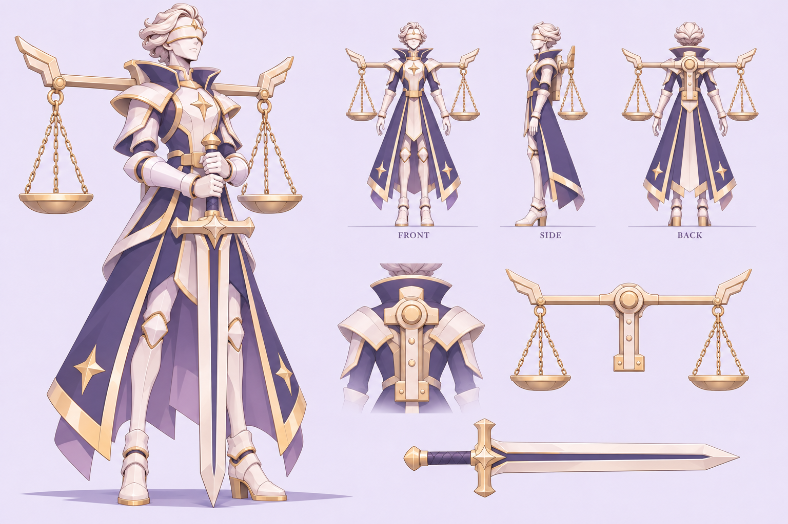

ASTELLA / PART 1 STAGE 05 / HARD
유스티티아 하드 변형 5안
노멀의 정체성을 이어받아 얼굴·외피·구동부·무장·자세가 크게 변하는 다섯 방향입니다.

노멀 기준
곱슬머리와 눈가리개, 가는 여성형 체격, 별 문양 예복, 대검과 천칭.
- 다른 1부 하드처럼 외피를 열고 태엽 구동부를 드러냈습니다.
- 각 안의 무장·팔 구성·외피·자세를 다르게 변형했습니다.
모두 선택 전 시안입니다. 이미지를 누르면 확대할 수 있습니다.